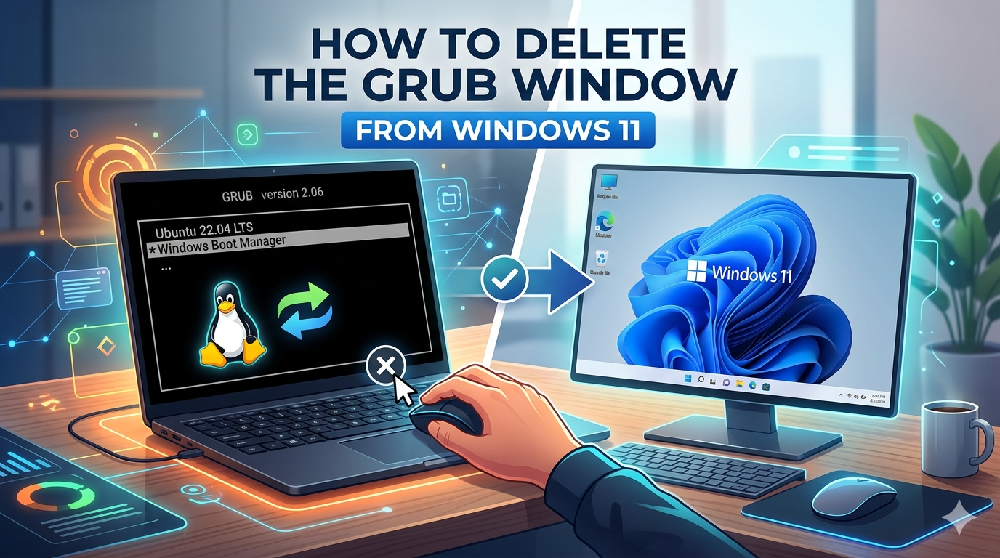

Still seeing the GRUB menu every time you start your PC — even after you've already deleted Ubuntu or Linux? This guide walks you through every step to completely remove GRUB and get Windows 11 booting cleanly again — no third-party tools required.

Removing Linux from a dual-boot setup doesn't automatically restore the Windows Boot Manager.
Each step includes detailed screenshots and clear instructions so you can follow along even if you're not a power user.
Open Disk Management and delete the Linux partition.
Press Windows + X and click Disk Management, or search for it in the Start menu.
Look at the list of partitions on your drive. The Linux partition will have no drive letter and will usually show as a RAW or unknown file system. It may also appear as a small partition labeled simply as "Linux" or show no label at all.
Right-click on the C: drive → Extend Volume → Next → Next → Finish.
The EFI (Extensible Firmware Interface) partition is a small, hidden partition on your drive where bootloader files — including GRUB — are stored. Windows hides it by default, so you need to temporarily assign it a letter to access it.
Open Command Prompt as Administrator (search "cmd" → right-click → Run as administrator → yes), then run these commands:
list disk to confirm you're working on Disk 0 (your main Windows drive).Now you'll navigate into the EFI partition and delete the Ubuntu-related bootloader folder.
Ctrl + Shift + Esc to open Task Managerexplorer.exe and check "Create this task with administrative privileges", then click OKThis PC → Z: → EFIubuntuubuntu folder and click Deleteubuntu folder. Do not delete the Microsoft folder — that will prevent Windows from booting.Don't leave the EFI partition accessible. Go back to your Command Prompt and remove the letter you assigned:
Yes — as long as you've already removed Linux from your system and you only delete the GRUB-related folder inside the EFI partition. The process does not touch your Windows files or the Windows Boot Manager. Just be careful not to delete the Microsoft folder in the EFI partition.
If you delete the Microsoft folder from the EFI partition, Windows won't be able to boot. You'll need a Windows 11 bootable USB to run Startup Repair and restore the boot files. That's exactly why this guide tells you to only delete the "ubuntu" folder — nothing else.
Deleting Ubuntu's partition removes the Linux OS, but it does not remove GRUB from the EFI partition. GRUB lives in a separate hidden partition. It keeps running until you physically delete the ubuntu folder from EFI — which is what Steps 3 and 4 in this guide are for.
Technically yes, but it's not recommended. If you remove GRUB while Ubuntu is still installed, you'd have no way to boot into Linux at all. The cleaner approach is to remove Linux first, then follow this guide to clean up the bootloader.
You need both for the full process. Disk Management handles deleting the Linux partition and merging free space. Command Prompt (via Diskpart) is the only way to access and modify the hidden EFI partition where GRUB lives. Neither tool alone covers everything.
Your PC now boots directly into Windows 11 — no more GRUB menu, no more Linux remnants. Your drive is clean and fully reclaimed.